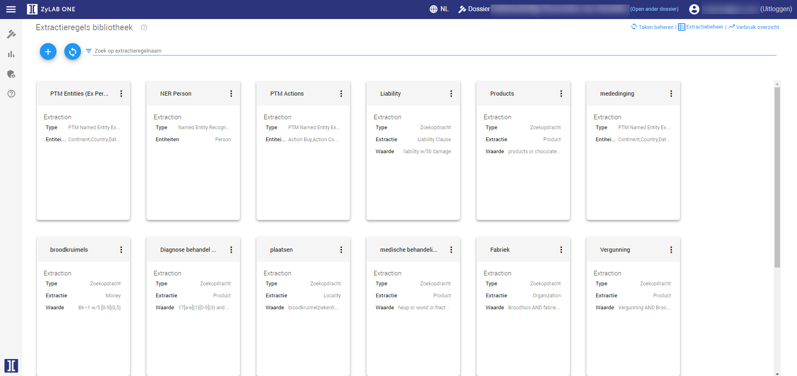
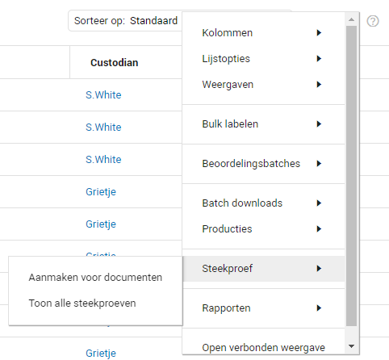
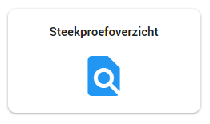
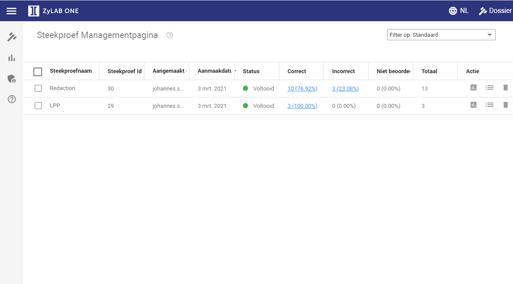

Insights maakt het mogelijk om informatie te vinden die lastig is om te vinden aan de hand van zoekopdrachten. Door Insights wordt het makkelijker om deze informatie te vinden en te categoriseren voor een beter overzicht. Hierbij kunt u denken aan bijvoorbeeld meningen van personen over milieuovertredingen.
Door middel van zoekopdrachten kunt u extractieregels aanmaken.

Voor meer informatie kunt u naar Insights gaan.
Technology Assisted Review wordt afgekort naar TAR. TAR is een functie waarbij computers en mensen samenwerken om documenten te categoriseren op ter zake doende en niet ter zake doende. Door middel van TAR kunnen meer zaken in beeld komen dan wanneer u gebruik maakt van het handmatig reviewen van de documenten. U kunt TAR tevens gebruiken voor het reviewen van onbekende datasets of het achterhalen van de meest belangrijke documenten in een dataset. Hierdoor kunt u alle ter zake doende informatie extraheren.
U kunt ook gebruik maken van TAR om zo alle documenten te achterhalen waar diagnose behandelcodes of zorgbehandelingen in staan. Dit kan ook met Legal Privileged Protected data.
U hoeft door middel van TAR maar een kleine hoeveelheid te doorzoeken. Het gebruik van TAR bespaart u dus veel tijd. De computer reviewt de overige data op grond van de door u eerder gereviewde documenten.
Voor meer informatie kunt u naar Assisted Review gaan.
Aflakken kan op twee manieren worden gedaan. U kunt handmatig aflakken terwijl u door de documenten zoekt (Redacties) of via Auto-Redacties. Via bepaalde notatie van bijvoorbeeld telefoonnummers kunt u alle gegevens binnen de categorie telefoonnummers aflakken. Er zijn verschillende manieren om het aflakken in het document te branden.
|
|
Belangrijk: Informatie hoeft alleen afgelakt te worden als deze zich bevindt in een ter zake doende document en deze informatie niet gebruikt mag worden in het onderzoek. U kunt dit het beste later tijdens het onderzoek toepassen. |
Voor meer informatie kunt u naar Redactions of Auto Redactions. Deze informatie is Engelstalig.

U kunt een steekproef toepassen om de resultaten van het reviewen te evalueren. De steekproef voert u uit op de documenten. De selectie van de steekproef wordt gemaakt uit alle documenten die op dat moment beschikbaar zijn in de documentenlijst (bijvoorbeeld alle documenten die beoordeeld zijn). U kunt de steekproef beoordelen door middel van de knop incorrect of correct.
De resultaten kunt u terug zien op de Steekproef Managementpagina via de Steekproefoverzicht knop op de Home pagina.


Wanneer u een paar rondes in de steekproef functie heeft gedaan kunt u nagaan of het reviewen volledig en juist is gedaan. Door deze steekproeven weet u zeker dat u geen gegevens meestuurt die niet gedeeld mogen worden tijdens het onderzoek.
Voor meer informatie kunt u naar Sampling gaan.

Wanneer u met meerdere mensen tegelijk in een dossier werkt kunnen er een hoop dingen gebeuren. Door middel van de audit log kunt zien wie welke actie wanneer heeft uitgevoerd. Dit is eigenlijk een groot logboek.
Wanneer u in een document bent kunt via het Documentinfo menu op Audit klikken (u moet misschien naar beneden scrollen). Hier staat tevens gemeld wie welke actie wanneer heeft uitgevoerd op het desbetreffende document. Hierdoor kunt u zien wat er al gedaan is voor uw onderzoek en wat er nog gedaan dient te worden.
Voor meer uitleg kunt u naar Audit gaan.